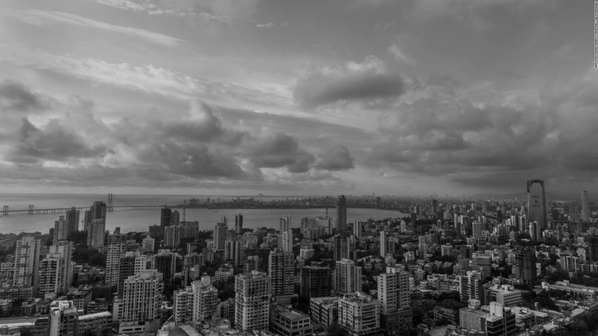
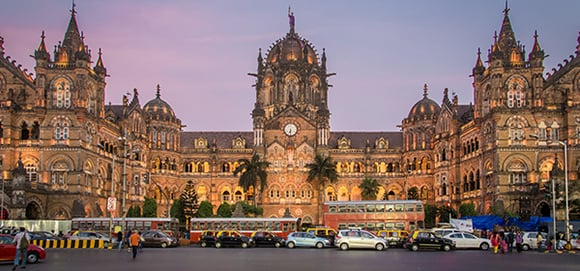

Mumbai also known as is the capital city of the Indian state of Maharashtra. According to the United Nations, as of 2018, Mumbai is the second-most populous city in the country after Delhi and the seventh-most populous city in the world with a population of roughly 20 million.As per the Indian government population census of 2011, Mumbai was the most populous city in India with an estimated city proper population of 12.5 million living under Municipal Corporation of Greater Mumbai. Mumbai is the centre of the Mumbai Metropolitan Region, the sixth most populous metropolitan area in the world with a population of over 23 million. Mumbai lies on the Konkan coast on the west coast of India and has a deep natural harbour. In 2008, Mumbai was named an alpha world city.It has the highest number of millionaires and billionaires among all cities in India. Mumbai is home to three UNESCO World Heritage Sites: the Elephanta Caves, Chhatrapati Shivaji Maharaj Terminus, and the city's distinctive ensemble of Victorian and Art Deco buildings.
Mumbai consists of seven islands which are joined together. The British started reclaiming land from the sea amidst these islands. Today, the elevation of the city varies from 10 to 15 meters. However, the city rises to a maximum elevation of 450 meters in northern Mumbai. The city is located on the Arabian Sea at the mouth of the Ulhas River and covers most of the Salsette Island whose remaining area is covered by Thane which actually forms a part of the Mumbai Metropolitan region. There are two big lakes in the city, namely Tulsi and Vihar and numerous small rivers like the Dahisar, Poisar and Oshiwara.
Mumbai is a strip of land however is divided into two mian reigons. South Bombay and Bombay. South Bombay is the old part of Bombay which includes locations like churchgate, malabar hill, chowpaty and more. This one sees on the map is on the south side. The locations in South Bombay are known to be one of the most posh location of the city. Coming north from South Bombay, you cross a bridge known as Bandra Worli Sealink. Post this you eneter the suburbs of Mumbai which includes locations like Bandra, BKC, Juhu and more. As you keep on going more north, one will cross the Chhatrapati Shivaji International Airport. North of this land apartment prices keep going lower and lower making it more affordable for the masses of the city.
